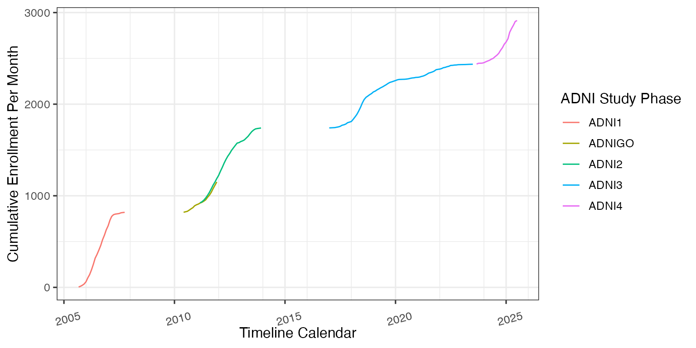
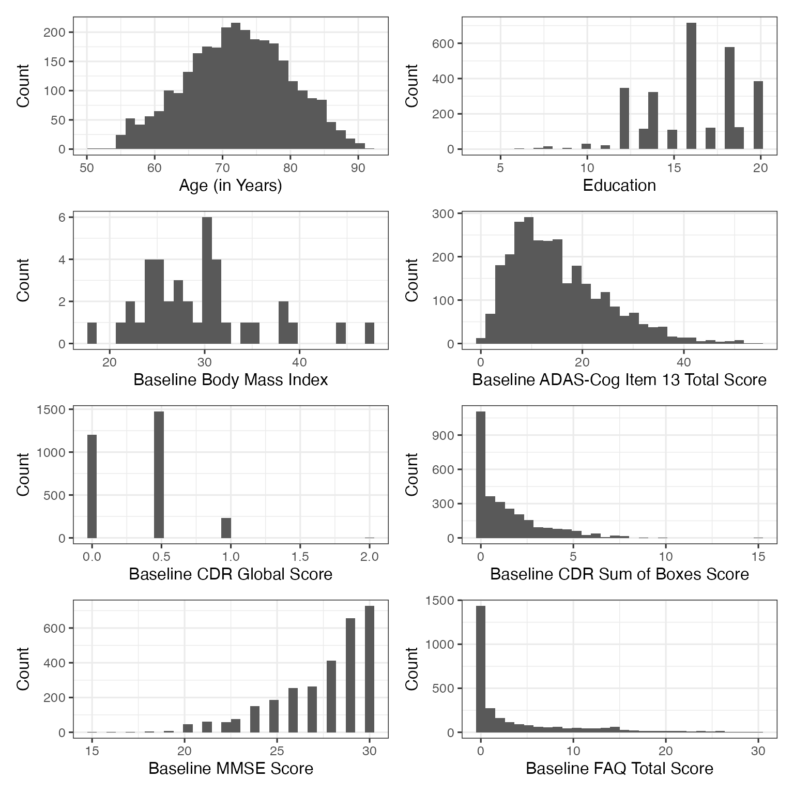
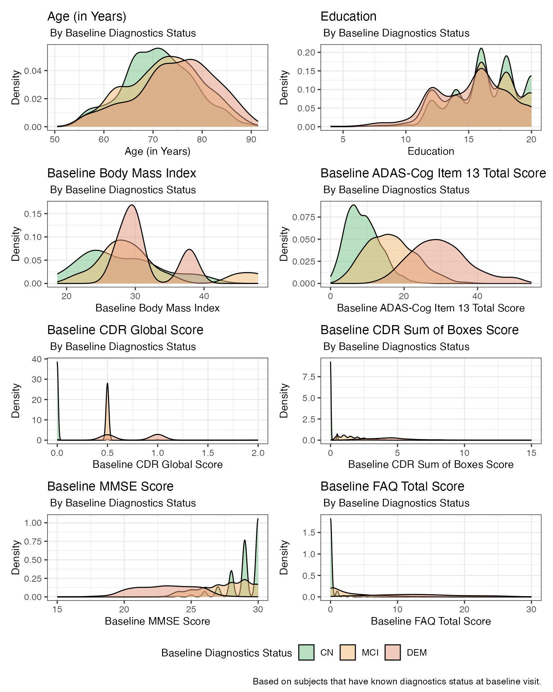

ADNI-Enrollment
Last Updated: July 25, 2025
Source:vignettes/ADNI-Enrollment.Rmd
ADNI-Enrollment.RmdIntroduction
This article demonstrate how to use the ADNIMERGE2 R
package to generate simple enrollment summaries.
Load Required R Packages
library(tidyverse)
library(gtsummary)
library(labelled)
library(ggplot2)
library(see)
library(ADNIMERGE2)
# Abbreviation list
abbrev_list <- paste0(
paste0(
"CN: Cognitive Normal; MCI: Mild Cognitive Impairment; DEM: Dementia; "
),
paste0(
"SD: Standard Deviation; Q1: the 25th percentile; Q3: the 75th percentile"
)
)
conts_statistic_label <- c("Mean (SD)", "Median (Q1, Q3)", "Range")
# Adjust BMI variable labels
var_label(ADSL$BMI) <- paste0("Baseline ", get_variable_labels(ADSL)$BMI)ADNI Enrollment Summaries
Enrollment Overtime
enroll_summary_data <- ADSL %>%
filter(ENRLFL %in% "Y") %>%
mutate(ENRLDT = floor_date(ENRLDT, unit = "month")) %>%
group_by(ENRLDT, ORIGPROT) %>%
summarise(num_enroll = n()) %>%
ungroup() %>%
mutate(ORIGPROT = factor(ORIGPROT, levels = adni_phase())) %>%
arrange(ENRLDT, ORIGPROT) %>%
mutate(cum_num_enroll = cumsum(num_enroll))
enroll_summary_plot <- enroll_summary_data %>%
ggplot(aes(x = ENRLDT, y = cum_num_enroll, color = ORIGPROT)) +
geom_line() +
scale_x_date(
date_minor_breaks = "2 years",
limits = range(enroll_summary_data$ENRLDT)
) +
labs(
x = "Timeline Calendar",
y = "Cumulative Enrollment Per Month",
color = "ADNI Study Phase"
) +
theme(axis.text.x = element_text(hjust = 0.3, vjust = 0, angle = 15))
enroll_summary_plot
Demographic Summaries: By Study Phase
tbl_summary(
data = ADSL %>%
filter(ENRLFL %in% "Y"),
by = ORIGPROT,
include = c(
AGE, SEX, EDUC, RACE, ETHNIC, MARISTAT, BMI, DX, APOE,
ADASTT13, CDGLOBAL, CDRSB, MMSCORE, FAQTOTAL
),
type = all_continuous() ~ "continuous2",
statistic = list(
all_continuous() ~ c(
"{mean} ({sd})",
"{median} ({p25}, {p75})",
"{min}, {max}"
),
all_categorical() ~ "{n} ({p}%)"
),
digits = all_continuous() ~ 1,
percent = "column",
missing_text = "(Missing)"
) %>%
add_overall(last = TRUE) %>%
add_stat_label(label = all_continuous2() ~ conts_statistic_label) %>%
modify_footnote_header(
footnote = "Column-wise percentage; n (%)",
columns = all_stat_cols(),
replace = TRUE
) %>%
modify_abbreviation(abbreviation = abbrev_list) %>%
modify_caption(
caption = "Table 1. ADNI - Subject Characteristics: By Study Phase"
) %>%
bold_labels()| Characteristic |
ADNI1 N = 8191 |
ADNIGO N = 1311 |
ADNI2 N = 7901 |
ADNI3 N = 6961 |
ADNI4 N = 4771 |
Overall N = 2,9131 |
|---|---|---|---|---|---|---|
| Age (in Years) | ||||||
| Mean (SD) | 75.2 (6.8) | 71.6 (7.9) | 72.7 (7.2) | 70.7 (7.4) | 68.7 (7.4) | 72.2 (7.6) |
| Median (Q1, Q3) | 75.6 (71.2, 80.1) | 71.1 (65.8, 77.4) | 72.8 (67.8, 77.6) | 70.0 (65.9, 75.8) | 68.6 (62.9, 74.0) | 72.3 (66.9, 77.6) |
| Range | 54.5, 90.9 | 55.6, 88.3 | 55.0, 91.4 | 50.5, 90.7 | 55.0, 88.1 | 50.5, 91.4 |
| Sex, n (%) | ||||||
| Female | 342 (42%) | 60 (46%) | 379 (48%) | 381 (55%) | 307 (64%) | 1,469 (50%) |
| Male | 477 (58%) | 71 (54%) | 411 (52%) | 315 (45%) | 170 (36%) | 1,444 (50%) |
| Education | ||||||
| Mean (SD) | 15.5 (3.0) | 15.8 (2.7) | 16.3 (2.6) | 16.4 (2.3) | 16.0 (2.8) | 16.0 (2.7) |
| Median (Q1, Q3) | 16.0 (13.0, 18.0) | 16.0 (14.0, 18.0) | 16.0 (14.0, 18.0) | 16.0 (15.0, 18.0) | 16.0 (14.0, 18.0) | 16.0 (14.0, 18.0) |
| Range | 4.0, 20.0 | 10.0, 20.0 | 8.0, 20.0 | 10.0, 20.0 | 8.0, 20.0 | 4.0, 20.0 |
| (Missing) | 1 | 0 | 0 | 0 | 1 | 2 |
| Race, n (%) | ||||||
| American Indian or Alaskan Native | 1 (0.1%) | 1 (0.8%) | 1 (0.1%) | 2 (0.3%) | 3 (0.6%) | 8 (0.3%) |
| Asian | 14 (1.7%) | 1 (0.8%) | 14 (1.8%) | 29 (4.2%) | 45 (9.4%) | 103 (3.5%) |
| Black or African American | 39 (4.8%) | 4 (3.1%) | 34 (4.3%) | 105 (15%) | 158 (33%) | 340 (12%) |
| Native Hawaiian or Other Pacific Islander | 0 (0%) | 0 (0%) | 2 (0.3%) | 1 (0.1%) | 0 (0%) | 3 (0.1%) |
| Other Pacific Islander | 0 (0%) | 0 (0%) | 0 (0%) | 0 (0%) | 2 (0.4%) | 2 (<0.1%) |
| White | 762 (93%) | 118 (90%) | 728 (92%) | 537 (77%) | 237 (50%) | 2,382 (82%) |
| More than one race | 3 (0.4%) | 5 (3.8%) | 10 (1.3%) | 13 (1.9%) | 22 (4.6%) | 53 (1.8%) |
| Unknown | 0 (0%) | 2 (1.5%) | 1 (0.1%) | 9 (1.3%) | 10 (2.1%) | 22 (0.8%) |
| Ethnicity, n (%) | ||||||
| Hispanic or Latino | 19 (2.3%) | 8 (6.1%) | 31 (3.9%) | 58 (8.3%) | 66 (14%) | 182 (6.2%) |
| Not Hispanic or Latino | 794 (97%) | 122 (93%) | 755 (96%) | 637 (92%) | 409 (86%) | 2,717 (93%) |
| Unknown | 6 (0.7%) | 1 (0.8%) | 4 (0.5%) | 1 (0.1%) | 2 (0.4%) | 14 (0.5%) |
| Marital Status, n (%) | ||||||
| Divorced | 52 (6.4%) | 17 (13%) | 82 (10%) | 79 (11%) | 89 (19%) | 319 (11%) |
| Domestic Partnership | 0 (0%) | 0 (0%) | 0 (0%) | 0 (0%) | 11 (2.3%) | 11 (0.4%) |
| Married | 629 (77%) | 95 (73%) | 586 (74%) | 517 (74%) | 281 (59%) | 2,108 (72%) |
| Never married | 28 (3.4%) | 3 (2.3%) | 33 (4.2%) | 35 (5.0%) | 56 (12%) | 155 (5.3%) |
| Unknown | 1 (0.1%) | 4 (3.1%) | 2 (0.3%) | 2 (0.3%) | 0 (0%) | 9 (0.3%) |
| Widowed | 108 (13%) | 12 (9.2%) | 87 (11%) | 62 (8.9%) | 39 (8.2%) | 308 (11%) |
| (Missing) | 1 | 0 | 0 | 1 | 1 | 3 |
| Baseline Body Mass Index | ||||||
| Mean (SD) | 27.6 (4.1) | 24.0 (NA) | 30.8 (7.2) | 30.0 (NA) | 29.3 (6.5) | 29.2 (6.2) |
| Median (Q1, Q3) | 28.8 (24.7, 30.5) | 24.0 (24.0, 24.0) | 28.7 (26.4, 31.0) | 30.0 (30.0, 30.0) | 28.7 (24.7, 31.9) | 28.7 (24.7, 31.0) |
| Range | 21.8, 31.0 | 24.0, 24.0 | 25.1, 44.7 | 30.0, 30.0 | 18.6, 47.9 | 18.6, 47.9 |
| (Missing) | 815 | 130 | 784 | 695 | 450 | 2,874 |
| Baseline Diagnostics Status, n (%) | ||||||
| CN | 225 (29%) | 1 (1.0%) | 295 (37%) | 380 (55%) | 292 (61%) | 1,193 (42%) |
| MCI | 373 (48%) | 99 (99%) | 344 (44%) | 243 (35%) | 148 (31%) | 1,207 (42%) |
| DEM | 182 (23%) | 0 (0%) | 151 (19%) | 73 (10%) | 37 (7.8%) | 443 (16%) |
| (Missing) | 39 | 31 | 0 | 0 | 0 | 70 |
| APOE Genotype, n (%) | ||||||
| ε2/ε2 | 2 (0.2%) | 0 (0%) | 3 (0.4%) | 1 (0.1%) | 2 (1.7%) | 8 (0.3%) |
| ε2/ε3 | 53 (6.5%) | 9 (7.0%) | 66 (8.5%) | 52 (7.7%) | 6 (5.1%) | 186 (7.4%) |
| ε2/ε4 | 18 (2.2%) | 2 (1.6%) | 14 (1.8%) | 17 (2.5%) | 4 (3.4%) | 55 (2.2%) |
| ε3/ε3 | 363 (44%) | 67 (52%) | 352 (45%) | 347 (52%) | 53 (45%) | 1,182 (47%) |
| ε3/ε4 | 295 (36%) | 42 (33%) | 269 (35%) | 204 (30%) | 46 (39%) | 856 (34%) |
| ε4/ε4 | 88 (11%) | 8 (6.3%) | 75 (9.6%) | 52 (7.7%) | 7 (5.9%) | 230 (9.1%) |
| (Missing) | 0 | 3 | 11 | 23 | 359 | 396 |
| Baseline ADAS-Cog Item 13 Total Score | ||||||
| Mean (SD) | 18.4 (9.2) | 12.4 (5.4) | 16.1 (10.1) | 13.1 (8.9) | 13.0 (8.1) | 15.4 (9.4) |
| Median (Q1, Q3) | 17.7 (11.0, 24.3) | 11.2 (8.7, 15.3) | 13.7 (8.3, 21.7) | 11.0 (6.7, 16.7) | 12.0 (7.0, 17.0) | 13.3 (8.3, 20.7) |
| Range | 1.0, 54.7 | 2.3, 28.3 | 0.0, 52.3 | 0.0, 48.3 | 0.0, 51.0 | 0.0, 54.7 |
| (Missing) | 8 | 1 | 7 | 11 | 39 | 66 |
| Baseline CDR Global Score, n (%) | ||||||
| 0 | 229 (28%) | 0 (0%) | 296 (37%) | 385 (55%) | 290 (61%) | 1,200 (41%) |
| 0.5 | 495 (61%) | 131 (100%) | 407 (52%) | 269 (39%) | 171 (36%) | 1,473 (51%) |
| 1 | 93 (11%) | 0 (0%) | 86 (11%) | 40 (5.7%) | 16 (3.4%) | 235 (8.1%) |
| 2 | 0 (0%) | 0 (0%) | 1 (0.1%) | 2 (0.3%) | 0 (0%) | 3 (0.1%) |
| (Missing) | 2 | 0 | 0 | 0 | 0 | 2 |
| Baseline CDR Sum of Boxes Score | ||||||
| Mean (SD) | 1.8 (1.8) | 1.2 (0.7) | 1.5 (1.9) | 1.0 (1.6) | 0.9 (1.5) | 1.4 (1.7) |
| Median (Q1, Q3) | 1.5 (0.0, 3.0) | 1.0 (0.5, 1.5) | 1.0 (0.0, 2.5) | 0.0 (0.0, 1.5) | 0.0 (0.0, 1.5) | 0.5 (0.0, 2.0) |
| Range | 0.0, 9.0 | 0.5, 4.0 | 0.0, 10.0 | 0.0, 10.0 | 0.0, 15.0 | 0.0, 15.0 |
| (Missing) | 2 | 0 | 0 | 0 | 0 | 2 |
| Baseline MMSE Score | ||||||
| Mean (SD) | 26.7 (2.7) | 28.3 (1.5) | 27.4 (2.7) | 28.0 (2.5) | 27.9 (2.4) | 27.5 (2.6) |
| Median (Q1, Q3) | 27.0 (25.0, 29.0) | 28.0 (27.0, 30.0) | 28.0 (26.0, 30.0) | 29.0 (27.0, 30.0) | 29.0 (27.0, 30.0) | 28.0 (26.0, 29.5) |
| Range | 18.0, 30.0 | 23.0, 30.0 | 19.0, 30.0 | 16.0, 30.0 | 15.0, 30.0 | 15.0, 30.0 |
| (Missing) | 2 | 0 | 0 | 0 | 3 | 5 |
| Baseline FAQ Total Score | ||||||
| Mean (SD) | 5.0 (6.6) | 1.9 (3.2) | 3.9 (6.2) | 2.6 (5.3) | 2.3 (4.4) | 3.6 (5.9) |
| Median (Q1, Q3) | 2.0 (0.0, 8.0) | 1.0 (0.0, 2.0) | 1.0 (0.0, 5.0) | 0.0 (0.0, 2.0) | 0.0 (0.0, 2.0) | 0.0 (0.0, 5.0) |
| Range | 0.0, 30.0 | 0.0, 22.0 | 0.0, 28.0 | 0.0, 30.0 | 0.0, 25.0 | 0.0, 30.0 |
| (Missing) | 7 | 2 | 6 | 28 | 63 | 106 |
| Abbreviation: CN: Cognitive Normal; MCI: Mild Cognitive Impairment; DEM: Dementia; SD: Standard Deviation; Q1: the 25th percentile; Q3: the 75th percentile | ||||||
| 1 Column-wise percentage; n (%) | ||||||
var_label_list <- get_variable_labels(ADSL)
cont_var_list <- c(
"AGE", "EDUC", "BMI", "ADASTT13", "CDGLOBAL",
"CDRSB", "MMSCORE", "FAQTOTAL"
)
cont_bl_violin_plot <- lapply(cont_var_list, function(x) {
ADSL %>%
filter(ENRLFL %in% "Y") %>%
rename_with(~ paste0("yvalue"), all_of(x)) %>%
ggplot(data = ., aes(x = yvalue)) +
geom_histogram() +
labs(x = var_label_list[[x]], y = "Count")
})
names(cont_bl_violin_plot) <- cont_var_list
plots(cont_bl_violin_plot, n_columns = 2)
Demographic Summaries: By Baseline Diagnostics Status
tbl_summary(
data = ADSL %>%
filter(ENRLFL %in% "Y"),
by = DX,
include = c(
AGE, SEX, EDUC, RACE, ETHNIC, MARISTAT, BMI, APOE,
ADASTT13, CDGLOBAL, CDRSB, MMSCORE, FAQTOTAL
),
type = all_continuous() ~ "continuous2",
statistic = list(
all_continuous() ~ c(
"{mean} ({sd})",
"{median} ({p25}, {p75})",
"{min}, {max}"
),
all_categorical() ~ "{n} ({p}%)"
),
digits = all_continuous() ~ 1,
percent = "row",
missing_text = "(Missing)"
) %>%
add_stat_label(label = all_continuous2() ~ conts_statistic_label) %>%
modify_caption(caption = paste0(
"Table 2. ADNI - Subject Characteristics: ",
"By Baseline Diagnosis Status"
)) %>%
modify_footnote_header(
footnote = "Row-wise percentage; n (%)",
columns = all_stat_cols(),
replace = TRUE
) %>%
modify_abbreviation(abbreviation = abbrev_list) %>%
bold_labels()| Characteristic |
CN N = 1,1931 |
MCI N = 1,2071 |
DEM N = 4431 |
|---|---|---|---|
| Age (in Years) | |||
| Mean (SD) | 71.0 (7.0) | 72.4 (7.6) | 74.6 (8.0) |
| Median (Q1, Q3) | 70.9 (66.4, 75.9) | 72.7 (66.9, 77.8) | 75.3 (69.7, 80.3) |
| Range | 50.5, 90.3 | 54.5, 91.4 | 55.1, 90.7 |
| Sex, n (%) | |||
| Female | 719 (50%) | 525 (36%) | 201 (14%) |
| Male | 474 (34%) | 682 (49%) | 242 (17%) |
| Education | |||
| Mean (SD) | 16.5 (2.5) | 15.9 (2.8) | 15.2 (2.9) |
| Median (Q1, Q3) | 16.0 (15.0, 18.0) | 16.0 (14.0, 18.0) | 16.0 (13.0, 18.0) |
| Range | 6.0, 20.0 | 4.0, 20.0 | 4.0, 20.0 |
| (Missing) | 1 | 1 | 0 |
| Race, n (%) | |||
| American Indian or Alaskan Native | 5 (63%) | 3 (38%) | 0 (0%) |
| Asian | 60 (59%) | 31 (30%) | 11 (11%) |
| Black or African American | 197 (58%) | 109 (32%) | 33 (9.7%) |
| Native Hawaiian or Other Pacific Islander | 1 (33%) | 2 (67%) | 0 (0%) |
| Other Pacific Islander | 1 (50%) | 1 (50%) | 0 (0%) |
| White | 890 (38%) | 1,033 (45%) | 391 (17%) |
| More than one race | 30 (57%) | 16 (30%) | 7 (13%) |
| Unknown | 9 (41%) | 12 (55%) | 1 (4.5%) |
| Ethnicity, n (%) | |||
| Hispanic or Latino | 104 (57%) | 62 (34%) | 16 (8.8%) |
| Not Hispanic or Latino | 1,084 (41%) | 1,139 (43%) | 424 (16%) |
| Unknown | 5 (36%) | 6 (43%) | 3 (21%) |
| Marital Status, n (%) | |||
| Divorced | 168 (54%) | 127 (41%) | 18 (5.8%) |
| Domestic Partnership | 8 (73%) | 2 (18%) | 1 (9.1%) |
| Married | 789 (38%) | 898 (44%) | 369 (18%) |
| Never married | 86 (56%) | 53 (34%) | 15 (9.7%) |
| Unknown | 3 (50%) | 3 (50%) | 0 (0%) |
| Widowed | 139 (46%) | 121 (40%) | 40 (13%) |
| (Missing) | 0 | 3 | 0 |
| Baseline Body Mass Index | |||
| Mean (SD) | 27.9 (5.7) | 31.0 (7.5) | 31.3 (4.5) |
| Median (Q1, Q3) | 25.2 (24.1, 31.1) | 28.7 (26.7, 31.0) | 29.9 (28.7, 33.9) |
| Range | 18.6, 39.3 | 21.8, 47.9 | 27.6, 37.9 |
| (Missing) | 1,174 | 1,194 | 439 |
| APOE Genotype, n (%) | |||
| ε2/ε2 | 5 (63%) | 2 (25%) | 1 (13%) |
| ε2/ε3 | 109 (60%) | 61 (33%) | 13 (7.1%) |
| ε2/ε4 | 19 (36%) | 24 (45%) | 10 (19%) |
| ε3/ε3 | 528 (46%) | 500 (43%) | 126 (11%) |
| ε3/ε4 | 250 (30%) | 392 (47%) | 186 (22%) |
| ε4/ε4 | 28 (13%) | 113 (50%) | 83 (37%) |
| (Missing) | 254 | 115 | 24 |
| Baseline ADAS-Cog Item 13 Total Score | |||
| Mean (SD) | 8.9 (4.5) | 16.4 (6.7) | 30.0 (8.1) |
| Median (Q1, Q3) | 8.3 (5.3, 11.7) | 16.0 (11.3, 21.0) | 29.3 (24.3, 34.7) |
| Range | 0.0, 26.3 | 0.7, 39.7 | 12.7, 54.7 |
| (Missing) | 32 | 20 | 13 |
| Baseline CDR Global Score, n (%) | |||
| 0 | 1,183 (99%) | 13 (1.1%) | 0 (0%) |
| 0.5 | 10 (0.7%) | 1,186 (84%) | 214 (15%) |
| 1 | 0 (0%) | 6 (2.6%) | 226 (97%) |
| 2 | 0 (0%) | 0 (0%) | 3 (100%) |
| (Missing) | 0 | 2 | 0 |
| Baseline CDR Sum of Boxes Score | |||
| Mean (SD) | 0.0 (0.2) | 1.5 (1.0) | 4.4 (1.7) |
| Median (Q1, Q3) | 0.0 (0.0, 0.0) | 1.5 (1.0, 2.0) | 4.5 (3.0, 5.0) |
| Range | 0.0, 2.0 | 0.0, 15.0 | 1.0, 10.0 |
| (Missing) | 0 | 2 | 0 |
| Baseline MMSE Score | |||
| Mean (SD) | 29.0 (1.2) | 27.6 (1.9) | 23.1 (2.3) |
| Median (Q1, Q3) | 29.0 (29.0, 30.0) | 28.0 (26.0, 29.0) | 23.0 (21.0, 25.0) |
| Range | 23.0, 30.0 | 19.0, 30.0 | 15.0, 30.0 |
| (Missing) | 0 | 5 | 0 |
| Baseline FAQ Total Score | |||
| Mean (SD) | 0.2 (0.9) | 3.2 (4.2) | 13.1 (6.8) |
| Median (Q1, Q3) | 0.0 (0.0, 0.0) | 2.0 (0.0, 5.0) | 13.0 (8.0, 18.0) |
| Range | 0.0, 13.0 | 0.0, 24.0 | 0.0, 30.0 |
| (Missing) | 56 | 38 | 7 |
| Abbreviation: CN: Cognitive Normal; MCI: Mild Cognitive Impairment; DEM: Dementia; SD: Standard Deviation; Q1: the 25th percentile; Q3: the 75th percentile | |||
| 1 Row-wise percentage; n (%) | |||
dx_color_pal <- c("#73C186", "#F2B974", "#DF957C", "#999999")
# Create density plot
cont_violin_plot_bl_dx <- lapply(cont_var_list, function(x) {
ADSL %>%
filter(ENRLFL %in% "Y") %>%
filter(!is.na(DX)) %>%
rename_with(~ paste0("yvalue"), all_of(x)) %>%
ggplot(data = ., aes(x = yvalue, fill = DX)) +
geom_density(alpha = 0.5) +
labs(
x = paste0(var_label_list[[x]]),
y = "Density",
color = get_variable_labels(ADSL$DX),
title = var_label_list[[x]],
subtitle = paste0(" By ", get_variable_labels(ADSL$DX)),
fill = get_variable_labels(ADSL$DX)
) +
scale_fill_manual(values = dx_color_pal) +
theme(
legend.position = "bottom",
title = element_text(size = 11)
)
})
names(cont_violin_plot_bl_dx) <- cont_var_list
plots(
cont_violin_plot_bl_dx,
n_columns = 2,
guides = "collect",
caption = paste0(
"Based on subjects that have known ",
"diagnostics status at baseline visit."
),
) & theme(legend.position = "bottom")